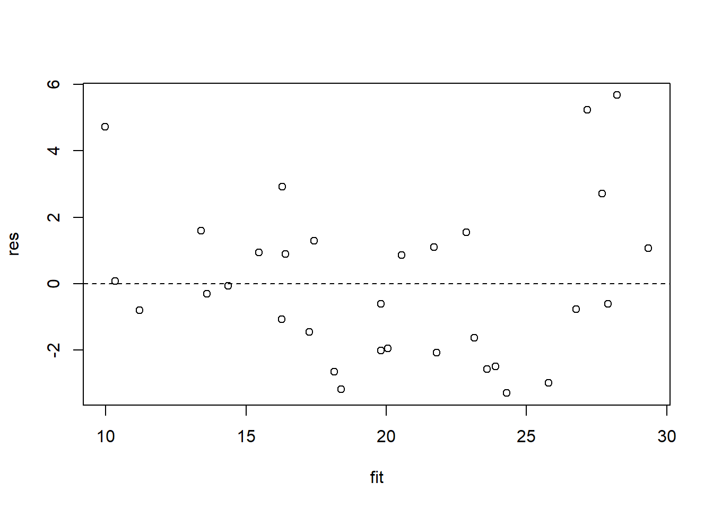
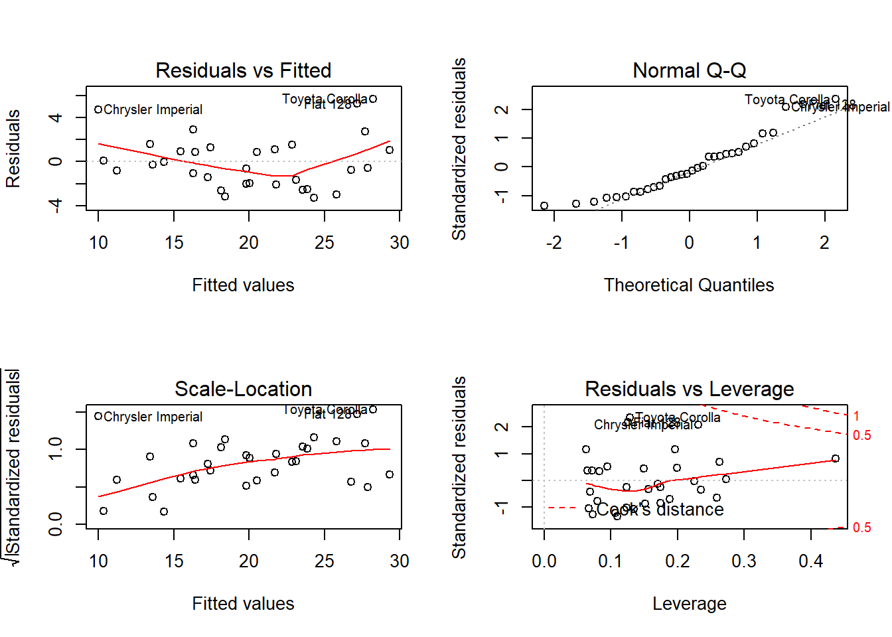

12 Linear Modeling
In this chapter, we will examine Pearson correlations, ANOVA, Ordinary Least Squares, and logistic regression.
12.1 Pearson Correlations
To estimate a Pearson correlation for all variables in a dataset, we pass a matrix or data frame into the cor() function.
# Pearson correlation coefficient matrix
cor(mtcars)## mpg cyl disp hp drat wt
## mpg 1.0000000 -0.8521620 -0.8475514 -0.7761684 0.68117191 -0.8676594
## cyl -0.8521620 1.0000000 0.9020329 0.8324475 -0.69993811 0.7824958
## disp -0.8475514 0.9020329 1.0000000 0.7909486 -0.71021393 0.8879799
## hp -0.7761684 0.8324475 0.7909486 1.0000000 -0.44875912 0.6587479
## drat 0.6811719 -0.6999381 -0.7102139 -0.4487591 1.00000000 -0.7124406
## wt -0.8676594 0.7824958 0.8879799 0.6587479 -0.71244065 1.0000000
## qsec 0.4186840 -0.5912421 -0.4336979 -0.7082234 0.09120476 -0.1747159
## vs 0.6640389 -0.8108118 -0.7104159 -0.7230967 0.44027846 -0.5549157
## am 0.5998324 -0.5226070 -0.5912270 -0.2432043 0.71271113 -0.6924953
## gear 0.4802848 -0.4926866 -0.5555692 -0.1257043 0.69961013 -0.5832870
## carb -0.5509251 0.5269883 0.3949769 0.7498125 -0.09078980 0.4276059
## qsec vs am gear carb
## mpg 0.41868403 0.6640389 0.59983243 0.4802848 -0.55092507
## cyl -0.59124207 -0.8108118 -0.52260705 -0.4926866 0.52698829
## disp -0.43369788 -0.7104159 -0.59122704 -0.5555692 0.39497686
## hp -0.70822339 -0.7230967 -0.24320426 -0.1257043 0.74981247
## drat 0.09120476 0.4402785 0.71271113 0.6996101 -0.09078980
## wt -0.17471588 -0.5549157 -0.69249526 -0.5832870 0.42760594
## qsec 1.00000000 0.7445354 -0.22986086 -0.2126822 -0.65624923
## vs 0.74453544 1.0000000 0.16834512 0.2060233 -0.56960714
## am -0.22986086 0.1683451 1.00000000 0.7940588 0.05753435
## gear -0.21268223 0.2060233 0.79405876 1.0000000 0.27407284
## carb -0.65624923 -0.5696071 0.05753435 0.2740728 1.00000000To perform a correlation test in which we produce a p-value, we pass two vectors into the cor.test() function.
# Pearson correlation coefficient test
with(mtcars, cor.test(mpg, wt))##
## Pearson's product-moment correlation
##
## data: mpg and wt
## t = -9.559, df = 30, p-value = 1.294e-10
## alternative hypothesis: true correlation is not equal to 0
## 95 percent confidence interval:
## -0.9338264 -0.7440872
## sample estimates:
## cor
## -0.8676594To get p-values from a correlation matrix for all variables, we will use the Hmisc package. We install it with install.packages() and then load it with library(). We use the library’s rcorr() function to calculate the correlation and p-values matrices.
install.packages('Hmisc') # Install first.# Load the library into the environment.
library(Hmisc)
my_corr <- rcorr(as.matrix(mtcars), type = 'pearson')
# Pearson correlation coefficients
my_corr$r## mpg cyl disp hp drat wt
## mpg 1.0000000 -0.8521620 -0.8475514 -0.7761684 0.68117191 -0.8676594
## cyl -0.8521620 1.0000000 0.9020329 0.8324475 -0.69993811 0.7824958
## disp -0.8475514 0.9020329 1.0000000 0.7909486 -0.71021393 0.8879799
## hp -0.7761684 0.8324475 0.7909486 1.0000000 -0.44875912 0.6587479
## drat 0.6811719 -0.6999381 -0.7102139 -0.4487591 1.00000000 -0.7124406
## wt -0.8676594 0.7824958 0.8879799 0.6587479 -0.71244065 1.0000000
## qsec 0.4186840 -0.5912421 -0.4336979 -0.7082234 0.09120476 -0.1747159
## vs 0.6640389 -0.8108118 -0.7104159 -0.7230967 0.44027846 -0.5549157
## am 0.5998324 -0.5226070 -0.5912270 -0.2432043 0.71271113 -0.6924953
## gear 0.4802848 -0.4926866 -0.5555692 -0.1257043 0.69961013 -0.5832870
## carb -0.5509251 0.5269883 0.3949769 0.7498125 -0.09078980 0.4276059
## qsec vs am gear carb
## mpg 0.41868403 0.6640389 0.59983243 0.4802848 -0.55092507
## cyl -0.59124207 -0.8108118 -0.52260705 -0.4926866 0.52698829
## disp -0.43369788 -0.7104159 -0.59122704 -0.5555692 0.39497686
## hp -0.70822339 -0.7230967 -0.24320426 -0.1257043 0.74981247
## drat 0.09120476 0.4402785 0.71271113 0.6996101 -0.09078980
## wt -0.17471588 -0.5549157 -0.69249526 -0.5832870 0.42760594
## qsec 1.00000000 0.7445354 -0.22986086 -0.2126822 -0.65624923
## vs 0.74453544 1.0000000 0.16834512 0.2060233 -0.56960714
## am -0.22986086 0.1683451 1.00000000 0.7940588 0.05753435
## gear -0.21268223 0.2060233 0.79405876 1.0000000 0.27407284
## carb -0.65624923 -0.5696071 0.05753435 0.2740728 1.00000000# p-values of the coefficients.
my_corr$P## mpg cyl disp hp drat
## mpg NA 6.112688e-10 9.380328e-10 1.787835e-07 1.776240e-05
## cyl 6.112688e-10 NA 1.803002e-12 3.477861e-09 8.244636e-06
## disp 9.380328e-10 1.803002e-12 NA 7.142679e-08 5.282022e-06
## hp 1.787835e-07 3.477861e-09 7.142679e-08 NA 9.988772e-03
## drat 1.776240e-05 8.244636e-06 5.282022e-06 9.988772e-03 NA
## wt 1.293958e-10 1.217567e-07 1.222311e-11 4.145827e-05 4.784260e-06
## qsec 1.708199e-02 3.660533e-04 1.314404e-02 5.766253e-06 6.195826e-01
## vs 3.415937e-05 1.843018e-08 5.235012e-06 2.940896e-06 1.167553e-02
## am 2.850207e-04 2.151207e-03 3.662114e-04 1.798309e-01 4.726790e-06
## gear 5.400948e-03 4.173297e-03 9.635921e-04 4.930119e-01 8.360110e-06
## carb 1.084446e-03 1.942340e-03 2.526789e-02 7.827810e-07 6.211834e-01
## wt qsec vs am gear
## mpg 1.293958e-10 1.708199e-02 3.415937e-05 2.850207e-04 5.400948e-03
## cyl 1.217567e-07 3.660533e-04 1.843018e-08 2.151207e-03 4.173297e-03
## disp 1.222311e-11 1.314404e-02 5.235012e-06 3.662114e-04 9.635921e-04
## hp 4.145827e-05 5.766253e-06 2.940896e-06 1.798309e-01 4.930119e-01
## drat 4.784260e-06 6.195826e-01 1.167553e-02 4.726790e-06 8.360110e-06
## wt NA 3.388683e-01 9.798492e-04 1.125440e-05 4.586601e-04
## qsec 3.388683e-01 NA 1.029669e-06 2.056621e-01 2.425344e-01
## vs 9.798492e-04 1.029669e-06 NA 3.570439e-01 2.579439e-01
## am 1.125440e-05 2.056621e-01 3.570439e-01 NA 5.834043e-08
## gear 4.586601e-04 2.425344e-01 2.579439e-01 5.834043e-08 NA
## carb 1.463861e-02 4.536949e-05 6.670496e-04 7.544526e-01 1.290291e-01
## carb
## mpg 1.084446e-03
## cyl 1.942340e-03
## disp 2.526789e-02
## hp 7.827810e-07
## drat 6.211834e-01
## wt 1.463861e-02
## qsec 4.536949e-05
## vs 6.670496e-04
## am 7.544526e-01
## gear 1.290291e-01
## carb NA12.2 ANOVA
To conduct ANOVA, we pass a formula and dataset into the aov() function. Note that the independent variables must be factor variables, so we must use the factor() function on our independent variables if they are not already factors.
my_anova <- aov(mpg ~ factor(gear) + factor(am), mtcars)
my_anova## Call:
## aov(formula = mpg ~ factor(gear) + factor(am), data = mtcars)
##
## Terms:
## factor(gear) factor(am) Residuals
## Sum of Squares 483.2432 72.8017 570.0023
## Deg. of Freedom 2 1 28
##
## Residual standard error: 4.511898
## Estimated effects may be unbalancedsummary(my_anova)## Df Sum Sq Mean Sq F value Pr(>F)
## factor(gear) 2 483.2 241.62 11.869 0.000185 ***
## factor(am) 1 72.8 72.80 3.576 0.069001 .
## Residuals 28 570.0 20.36
## ---
## Signif. codes: 0 '***' 0.001 '**' 0.01 '*' 0.05 '.' 0.1 ' ' 1To compare pairwise means, we use TukeyHSD() on our ANOVA model.
TukeyHSD(my_anova)## Tukey multiple comparisons of means
## 95% family-wise confidence level
##
## Fit: aov(formula = mpg ~ factor(gear) + factor(am), data = mtcars)
##
## $`factor(gear)`
## diff lwr upr p adj
## 4-3 8.426667 4.1028616 12.750472 0.0001301
## 5-3 5.273333 -0.4917401 11.038407 0.0779791
## 5-4 -3.153333 -9.0958350 2.789168 0.3999532
##
## $`factor(am)`
## diff lwr upr p adj
## 1-0 1.805128 -1.521483 5.13174 0.275792612.3 Ordinary Least Squares
To estimate a regression model, we pass a formula and a dataset into the lm() function.
# SYNTAX OF lm(): lm(y ~ x1 + x2 + ... xn, data)
my_ols <- lm(mpg ~ wt + hp + gear + am, mtcars)
# Return the coefficients
my_ols##
## Call:
## lm(formula = mpg ~ wt + hp + gear + am, data = mtcars)
##
## Coefficients:
## (Intercept) wt hp gear am
## 32.55626 -2.79996 -0.03837 0.40299 1.68739# Produce a summary table of the results.
summary(my_ols)##
## Call:
## lm(formula = mpg ~ wt + hp + gear + am, data = mtcars)
##
## Residuals:
## Min 1Q Median 3Q Max
## -3.2986 -1.9652 -0.4584 1.1434 5.6766
##
## Coefficients:
## Estimate Std. Error t value Pr(>|t|)
## (Intercept) 32.55626 4.67171 6.969 1.72e-07 ***
## wt -2.79996 0.94234 -2.971 0.006164 **
## hp -0.03837 0.01004 -3.823 0.000706 ***
## gear 0.40299 1.06519 0.378 0.708145
## am 1.68739 1.74691 0.966 0.342651
## ---
## Signif. codes: 0 '***' 0.001 '**' 0.01 '*' 0.05 '.' 0.1 ' ' 1
##
## Residual standard error: 2.577 on 27 degrees of freedom
## Multiple R-squared: 0.8407, Adjusted R-squared: 0.8171
## F-statistic: 35.63 on 4 and 27 DF, p-value: 2.091e-10# Return the coefficient table from the summary regression table.
coef(summary(my_ols))## Estimate Std. Error t value Pr(>|t|)
## (Intercept) 32.55625619 4.67170949 6.9688101 1.723405e-07
## wt -2.79995626 0.94234225 -2.9712732 6.164196e-03
## hp -0.03837417 0.01003886 -3.8225618 7.063674e-04
## gear 0.40299281 1.06519249 0.3783286 7.081449e-01
## am 1.68739402 1.74690861 0.9659315 3.426513e-0112.3.1 Residual diagnostics with OLS
To analyze the performance of our models with respect to our residuals, we can calculate the predicted values with predict() and residuals with resid(). We can then plot them to see whether the residuals behave in a homoskedastic manner.
fit <- predict(my_ols)
res <- resid(my_ols)
plot(res ~ fit)
abline(lm(res ~ fit), lty = 2)
Alternatively, we can directly plot our model. Make sure to set a 2-by-2 canvas beforehand so that all the plots from plot() will generate simultaneously.
par(mfrow = c(2,2)) # Set 2x2 canvas
plot(my_ols)
12.4 Logistic Regression
Estimating a logistic regression is similar to estimating a model with OLS; however, we add an additional input in which we set the distribution family–in this case, it is the binomial one.
my_logit <- glm(am ~ mpg + wt + gear,
mtcars,
family = binomial(link = 'logit'))## Warning: glm.fit: algorithm did not converge## Warning: glm.fit: fitted probabilities numerically 0 or 1 occurredmy_logit##
## Call: glm(formula = am ~ mpg + wt + gear, family = binomial(link = "logit"),
## data = mtcars)
##
## Coefficients:
## (Intercept) mpg wt gear
## 137.764 -6.548 -113.946 87.125
##
## Degrees of Freedom: 31 Total (i.e. Null); 28 Residual
## Null Deviance: 43.23
## Residual Deviance: 2.765e-09 AIC: 8summary(my_logit)##
## Call:
## glm(formula = am ~ mpg + wt + gear, family = binomial(link = "logit"),
## data = mtcars)
##
## Deviance Residuals:
## Min 1Q Median 3Q Max
## -2.415e-05 -2.100e-08 -2.100e-08 2.100e-08 3.585e-05
##
## Coefficients:
## Estimate Std. Error z value Pr(>|z|)
## (Intercept) 137.764 324199.947 0.000 1.000
## mpg -6.548 8893.588 -0.001 0.999
## wt -113.946 95316.944 -0.001 0.999
## gear 87.125 71730.620 0.001 0.999
##
## (Dispersion parameter for binomial family taken to be 1)
##
## Null deviance: 4.3230e+01 on 31 degrees of freedom
## Residual deviance: 2.7646e-09 on 28 degrees of freedom
## AIC: 8
##
## Number of Fisher Scoring iterations: 2512.5 Summary
| Function | Description | Example |
|---|---|---|
| cor(data) | Correlation matrix. | cor(mtcars) |
| rcorr(data) | Correlation matrix with p-values. | library(Hmisc); rcorr(as.matrix(mtcars), type = ‘pearson’ |
| aov(y ~ x, data) | ANOVA. | aov(mpg ~ factor(gear), mtcars) |
| TukeyHSD(anova) | Tukey HSD pairwise means. | TukeyHSD(aov(mpg ~ factor(gear), mtcars)) |
| lm(y ~ x, data) | Linear Modeling / Ordinary Least Squares modeling. | lm(mpg ~ wt + gear, mtcars) |
| glm(y ~ x, data, family) | Generalized Linear Model. | glm(am ~ mpg + gear, mtcars, family = binomial(link = ‘logit’)) |